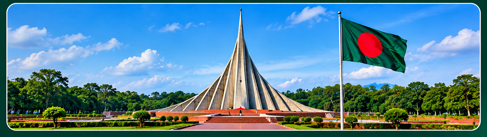

Beauty, History & Heritage
Bangladesh in every river, field, and story.
From the green delta fields and riverside villages to the historic struggle for freedom, Bangladesh offers a living heritage shaped by culture, resilience, and beauty.
- 8Divisions
- 64Districts
- 1971Independence

Rural Bangladesh
Fields, rivers, and warm community life

Listening to the riverEveryday Bangladesh
Village life, seasons, and togetherness
Green paddies
Rice paddies shape rural landscapes and sustain families through three harvest seasons.
Boats and ferries
Rivers are roads and lifelines, carrying boats, fish, and daily movement across the delta.
Nabanna and pitha
Harvest celebrations bring families together with food, music, and joyful community traditions.
Homes built for community
Courtyards, ponds, and shared meals define the rhythm of daily life in village Bangladesh.
Jute and labor
Fields hum with activity from planting to harvest, where hand work and seasonal timing matter.
Boishakhi fairs
Traditional fairs and seasonal gatherings bring color, song, and shared pride to the countryside.
A proud history
From the Language Movement to independence
1952
The Language Movement
People protested for Bangla to be recognized as a state language and the movement became a lasting symbol of dignity and identity.
1966
Six-Point Programme
Demands for greater autonomy helped shape the political movement for self-rule and democratic rights.
1971
Independence
After years of struggle and sacrifice, Bangladesh emerged as an independent nation on 16 December 1971.
Eight divisions
One country with many landscapes
Dhaka
Capital city, history, and culture.
Explore divisionChattogram
Sea beaches, hills, and port life.
Explore divisionRajshahi
Mangoes, heritage sites, and silk.
Explore divisionKhulna
Sundarbans and river-delta traditions.
Explore divisionBarishal
Canals, rivers, and coastal beauty.
Explore divisionSylhet
Tea gardens, hills, and wetlands.
Explore divisionRangpur
Agriculture, folklore, and northern heritage.
Explore divisionMymensingh
River culture and folk traditions.
Explore divisionCulture and heritage
Language, food, art, and celebration
Bangla is the national language and a source of shared identity, while food, folk music, and textile traditions reflect the everyday creativity of the people.
- Nakshi kantha embroidery
- Pohela Boishakh and festive traditions
- Baul music and folk storytelling
- Traditional cuisine from every region
Famous places
Places worth discovering
UNESCO
Sundarbans
Largest mangrove forest and home to the Royal Bengal tiger.
Cox's Bazar
About 120 km of sandy shoreline and unforgettable sunsets.
Srimangal
Tea gardens and green hills that define Sylhet's landscape.
Lalbagh Fort
Mughal-era heritage in the heart of Old Dhaka.
UNESCO
Somapura Mahavihara
Ancient Buddhist monastery ruins at Paharpur.
UNESCO
Sixty Dome Mosque
15th-century architecture and a key landmark in Bagerhat.
Sajek Valley
Cloudy hill views and Indigenous communities in Rangamati.
Kuakata
A unique beach where sunrise and sunset can both be seen over the sea.
“Our mission is to showcase the natural beauty, rural lifestyle, historical heritage, and cultural diversity of Bangladesh to people around the world.”
Contact
Let us help you discover Bangladesh
Planning a trip, preparing a lesson, or sharing a story? We would love to hear from you.
Email: hello@example.com
Response time: We aim to reply within a few days.